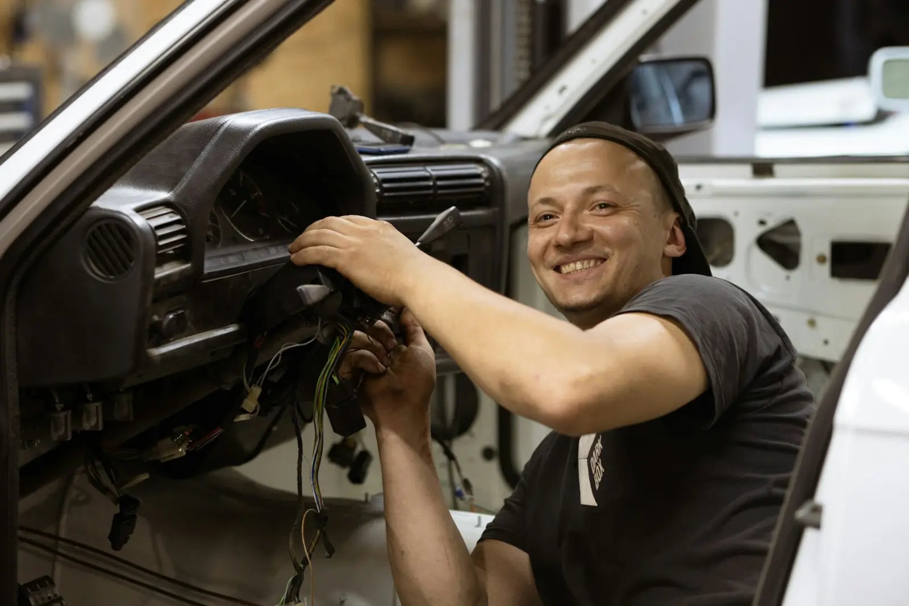
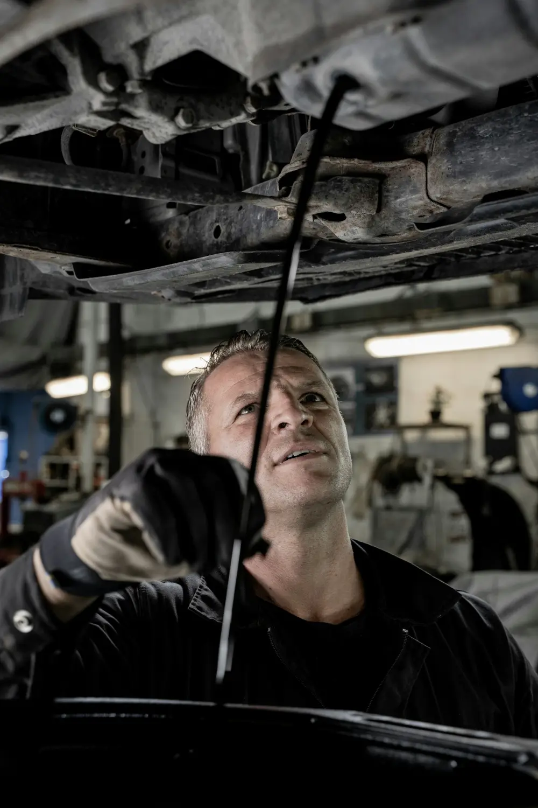

Etusivu / Asiakaspalvelu
AsiakaspalveluSinua kuunnellaan. Autostasi huolehditaan.
Ensiluokkainen asiakaspalvelu on meille yhtä tärkeää kuin ammattitaitoinen korjaus. Haluamme tehdä autosi huollosta sinulle mahdollisimman helppoa.

Kolme asiaa, joista pidämme kiinni.
Kuuntelemme sinua
Käymme läpi autosi oireet, huoltotarpeen ja toiveesi. Sinun ei tarvitse tuntea autotekniikkaa, voit kertoa tilanteen omin sanoin.
Kerromme selkeästi
Selitämme, mitä autollesi tehdään ja miksi. Käymme työt ja kustannusarvion läpi ennen korjausta.
Pidämme sinut ajan tasalla
Kerromme työn etenemisestä. Jos huollon aikana löytyy muuta korjattavaa, lisätöistä sovitaan kanssasi etukäteen.


AutoJerryssä
Suutarilassa. Lähellä sinua.
Suutarilan AD-Autohuolto on riippumaton monimerkkikorjaamo Helsingissä, lähellä Kehä III:a. Yhdistämme paikallisen korjaamon henkilökohtaisen palvelun AD-ketjun osaamiseen.
Voit ottaa yhteyttä myös silloin, kun et vielä tiedä, mitä autosi tarvitsee. Käydään tilanne yhdessä läpi.
- Kaikki automerkit
- Kustannusarvio ennen työtä
- Lisätyöt vain luvallasi
- Huoltomerkintä digitaaliseen huoltokirjaan
- Sijaisauto saatavuuden mukaan
Mitä asiakkaamme sanovat.
4,7/ 5
Asiakasarviot AutoJerryssä
Lue kaikki arviot ↗Ihan asiallinen korjaamo, auto tuli kuntoon päivässä, kuten luvattiin. Vähän tuli yllätyksiä ja pieni lisäkustannus alkuperäiseen, mutta siitä ilmoitettiin myös ennakkoon.
Asiointi hyvää ja asiallista. Sain erittäin hyvää palvelua ja voin lämpimästi suositella tätä korjaamoa muille
Hyvin hoidettu, asianmukainen palvelu, homma eteni niin kuin oli sovittu positiivisella asenteella.
Siellä oli ihan hyvä tunnelma ja hommat hoituivat todella hyvin.
Upeaa toimintaa! Suuret kiitokset
Pääsin huoltoon nopeasti ja kaikki toimi kuten oli sovittu.
Arviot ovat sanatarkkoja lainauksia AutoJerry-palvelusta.
Kerro, miten voimme auttaa.
Käymme työn ja kustannusarvion läpi ennen kuin aloitamme. Etkö ole varma, mitä autosi tarvitsee? Kerro tilanteesta omin sanoin.
- 01Auton rekisterinumero
- 02Ajokilometrit
- 03Tarvittava työ tai vian kuvaus
- 04Toivottu ajankohta
Haluatko mieluummin soittaa?
Soita 050 557 2709Kiitos, pyyntö on vastaanotettu.
Käymme sen läpi ja otamme yhteyttä ajan vahvistamiseksi. Kiireellisissä asioissa soita arkisin 8–17 numeroon 050 557 2709.
Tämä on demoversio, joten tietoja ei lähetetty. Oikealla sivulla pyyntö menisi suoraan korjaamon sähköpostiin.